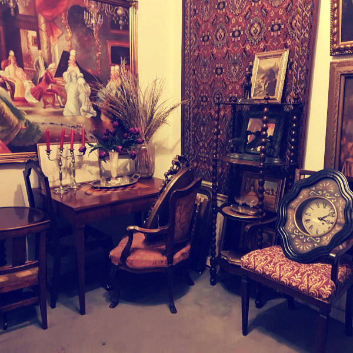
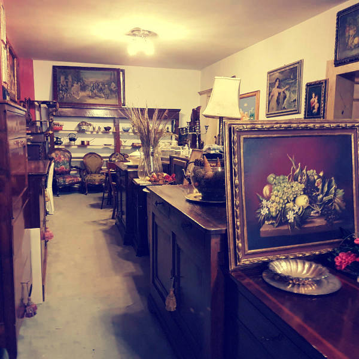
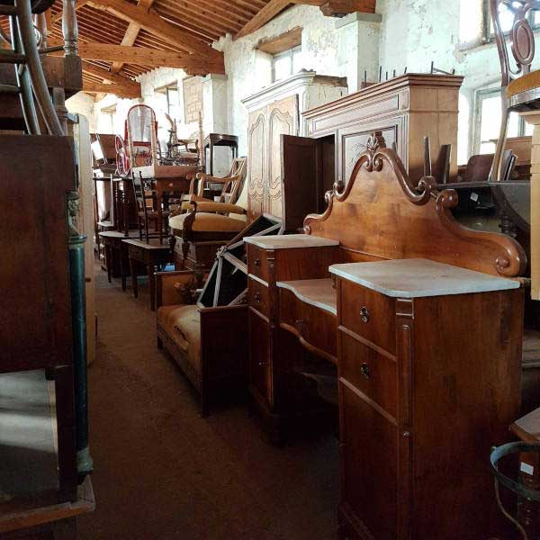
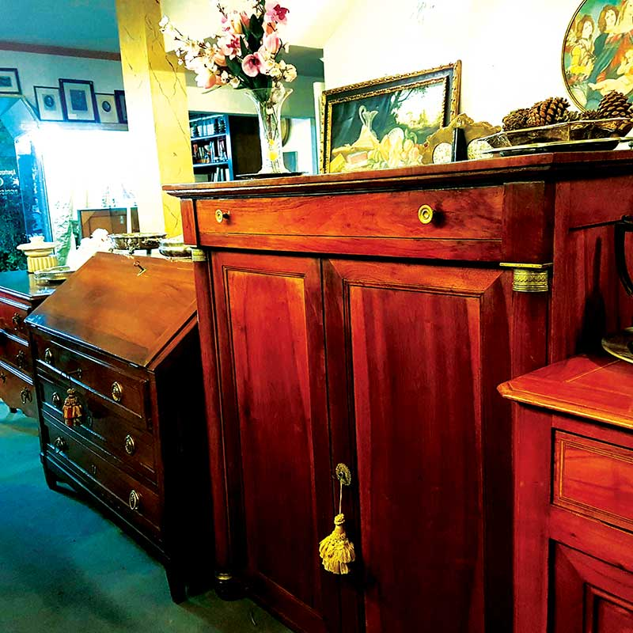

Antiquariato Modernariato Quadri Oggettistica Montecatini Terme
Nella centralissima Piazza XX Settembre, a Montecatini Terme, a poche decine di chilometri da Firenze, Prato, Pistoia, ma anche Lucca, Viareggio, Forte dei Marmi, ha sede, fin dal 1990, lo storico negozio Antichità Lo Scorpione.
Il negozio propone una vasta scelta di mobili antichi, oggettistica, quadri , ma anche arredi e modernariato, accuratamente selezionati.
Ci occupiamo anche di recupero mobili e arredi e di restaurazione con sapienza artigianale per rendere unico ogni prodotto
Il negozio propone una vasta scelta di mobili di frutto di un’attenta e continua ricerca. Questa selezione riguarda principalmente mobili italiani e francesi, mobili restaurati e non restaurati.
Disponiamo inoltre di un fornito magazzino. Negozio e Magazzino offrono attraverso un itinere per tutti attraverso l’antico, il vecchio, il moderno rivisitato e il nuovo su misura s.
Gli articoli presenti su questo sito sono solamente una piccola selezione dei nostri prodotti. Per visionare l’intera collezione vi consigliamo di telefonarci al 335 82 59 900 o venirci a trovare in negozio.
 